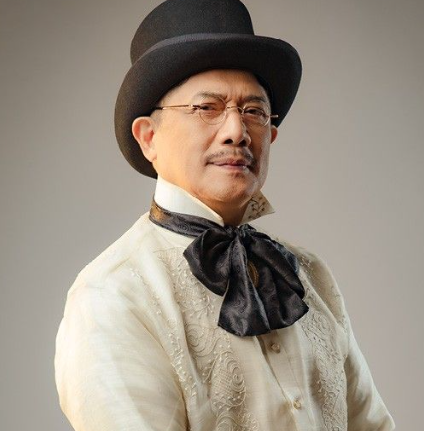
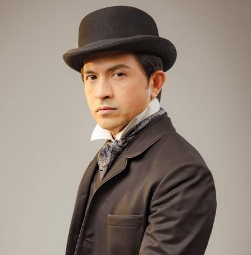
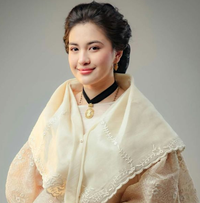
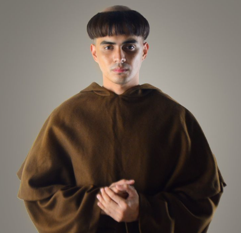

NOLI ME TANGERE CHARACTERS |
|  |
Kapitan Tiago |
- Older he looks, short and round, and the talk of the town for being rich.
- He's a Govener Civil - Captain of the Mestizos.
- One of the richest in Binondo, and in San Diego for his land rent/tax.
- He runs a company of opium with his Chinese friend.
|
|
Padre Damaso |
- Was previously the highest in power for priests before Padre Salvi took over.
- The godfather of Maria Clara; however, he's actually the biological father.
- A symbol of the corrupt priests back in Spain's colonization.
|
|  |
Juan Crisostomo Ibarra |
- Also known as Juan Crisostomo Ibarra y. Magsalin.
- Intelligent, highly ideal and aspiring with his goals.
- He studied in Europe for 7 years, then returned to San Diego.
- He plans to continue his father's legacy of contributing to teaching students.
|
|  |
Maria Clara |
- Young, beautiful, and smart.
- She's been close friends with Ibarra since childhood.
- Learned abroad in a beatery for 7 years; a strict, religious school.
|
|  |
Padre Salvi |
- He's the current priest in power, right after Padre Damaso.
- Doesn't punish by abuse; uses payment as amendment.
- Padre Salvi is enemies with Alferez, another person competing for power.
|